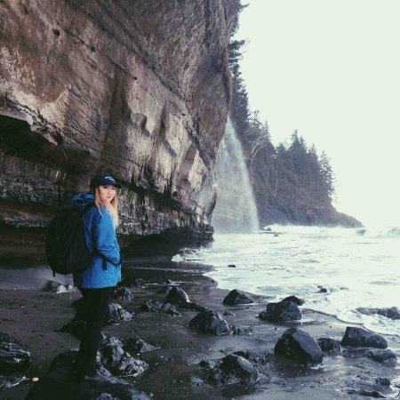

Home
Hey! This is a website I built from scratch as a way to practice my HTML/CSS skills. It also serves as a portfolio for my work. It is best viewed on desktop as I have not optimized a mobile version yet. This website is hosted on GitHub Pages.
I am currently a second year Computer Science student at the University of Victoria, located in Victoria, BC. You can find out more about me on the About page, and my experience on the Resume page. Right now, I am looking for a co-op for the Summer of 2017. Through obtaining a co-op I hope to be able to apply and expand my programming skillset. I also hope to expand my professional network, and gain new experiences in the working world.
I am interested in full-stack development. In my classes, I have learned various elements of computer science theory, software engineering principles, and computer hardware. I believe programming is such a fundamental skill to have, which is not emphasized enough in the world today. I have always loved creating new things, and the way programming allows me to do that is one of the main reasons I chose my major.
Aside from programming, I am interested in music, art, history, literature, and world cultures.